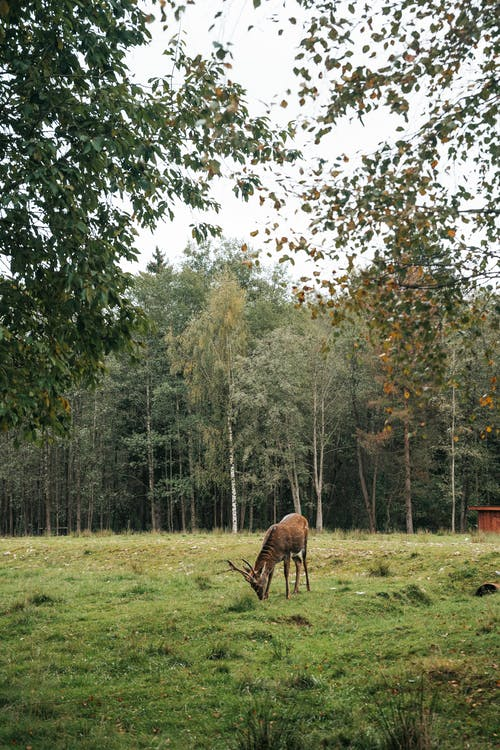

Responsive images
Designing responsive images
An image that’s wider than its container will overflow, which can introduce horizontal scrolling.
To prevent this, images can be made responsive in one of four ways:
- Technique 1 – Style the image with CSS width: 100%
- Technique 2 – Style the image with CSS max-width: 100%
- Technique 3 – Serve different sizes of the image to different screen sizes using the srcset attribute
- Technique 4 – Serve different images to different screen sizes using the picture element.
Technique 1: Style the image with CSS width: 100%
If the image width is set to a percentage and the height property is set to “auto”, the image scales up or down to match the dimensions of its container. Typically, the image width is set to 100%.
Resize the browser window to see the image scale.
CSS:
Code begins
.sidebar {
width: 50%;
}
.sidebar-img { width: 100%; height: auto;}
Code ends
HTML:
Code begins
<div class=”sidebar”>
<img src=”deer.jpg” class=”sidebar-img” alt=”Deer pasturing in a small meadow in a forest.”>
</div>
Code ends
Technique 2 – Style the image with CSS max-width: 100%
If the max-width property is set to 100%, the image will scale down, but never scale up to be larger than its original size.
Resize the browser window to see the image scale.
CSS:
Code begins
.sidebar {
width: 50%;
}
.sidebar-img-max {
max-width: 100%;
height: auto;}
Code ends
HTML:
Code begins
<div class=”sidebar”>
<img src=”deer-320.jpg” class=”sidebar-img-max” alt=”Deer pasturing in a small meadow in a forest.”>
</div>
Code ends
Technique 3 – Serve different sizes of the image to different screen sizes using the srcset attribute.
This technique serves different sizes of an image, larger or smaller, depending on the device. While it’s possible to serve different pictures altogether with this technique, since all variations share one alt attribute there’s little choice: the variations must represent the same thing.
The srcset attribute holds a comma-separated list of differently sized versions of the same image, each list item consisting of the filename and the image’s true width (the w unit is equivalent to pixels).
The sizes attribute holds a comma-separated list of different sizes of slots for images at different screen widths. A media condition tests the screen width. The last slot width has no media condition; it’s the default that’s chosen when none of the media conditions is true. This example has a 160-pixel wide slot for small screens, and a 320-pixel wide slot for the rest.
The src attribute holds the default image file name.
The alt attribute holds the alternative text.
With these attributes in place, the browser will:
- Check the device width.
- Determine which media condition in the sizes list is the first one to be true.
- Check the slot size given to that media query.
- Load the image referenced in the srcset list that has the same size as the slot or, if there isn't one, the first image that is bigger than the chosen slot size.
Resize the browser window to see the image scale.
CSS:
Code begins
<img srcset=”deer-160.jpg 160w,
deer-320.jpg 320w”
sizes=”(max-width: 600px) 160w,
320px”
src=”deer-320.jpg”
alt=”A deer pasturing in a small meadow in a forest.”>
Code ends
Resource: Responsive Image Generator
The Responsive Image Generator is an online tool that allows you to upload an image and generate various image dimensions for responsive breakpoints.

Code ends
Technique 4 – Serve different images to different screen sizes using the picture element.
A small object of interest in a large image is hard to discern if that same image is shrunk to fit a mobile device. Cropping removes unneeded outer areas of an image to reframe closer to the object of interest. The <picture> element is commonly used in responsive design for “Art Direction,” where different crops of the same image, often at different aspect ratios, are served to different screen sizes.
The <picture> element contains two tags: one or more <source> tags and one <img> tag.
The browser looks for the first <source> element with a media query matching the current viewport, then displays the image specified in the srcset attribute.
The <img> element serves as a fallback if none of the source tags matches. It also provides the alt text for all variations of the image.
With this technique you could serve different pictures altogether and offer multiple resolutions of each one: <source> can take a srcset attribute with multiple images referenced, as well as a sizes attribute. However, as with Technique 3, srcset, all variations share one alt attribute, so there’s little choice: the variations must represent the same thing.
Good Example: Using the Art Direction
In this example, a crop of the photo is served to small devices.
View HTML
Code begins
The <source> elements include a media condition. The first condition that returns true is displayed: if the viewport width is 799px wide or less, the first <source> element's image is displayed; if the viewport width is 800px or more, the second <source> element’s image is displayed.
<picture> <
<source media="(max-width: 799px)" srcset="deer-crop200w.jpg">
<source media="(min-width: 800px)" srcset="deer-500w.jpg">
<img src="deer-500w.jpg” alt="A deer pasturing in a small meadow in a forest.”>
</picture>
Code ends
Cropped image served to small devices

Original image served to large devices

Code ends
Bad example: Non-responsive image
In the screenshot below, a 1,600-pixel wide image lacking any responsive markup displays at its native width. Since it’s wider than the viewport, it forces a horizontal scrollbar to appear.
View HTML
Code begins
<img src=”nature.png” alt=”Monarch butterflies fly below pine trees”>
Code ends
Image from cntravaler.com
Related WCAG resources
Related WCAG resources
Success criteria
Techniques
- C32: Using media queries and grid CSS to reflow columns
- C31: Using CSS Flexbox to reflow content
- C33: Allowing for Reflow with Long URLs and Strings of Text
- C38: Using CSS width, max-width and flexbox to fit labels and inputs
- SCR34: Calculating size and position in a way that scales with text size
- G206: Providing options within the content to switch to a layout that does not require the user to scroll horizontally to read a line of text